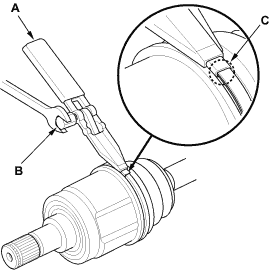
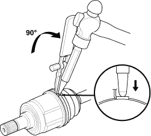
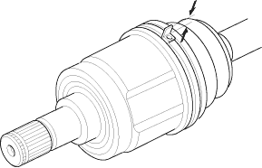
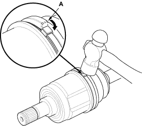

- Thread the free end of the band through the nose section of the commercially available boot band tool KD-3191 or equivalent (A), and into the slot on the winding mandrel (B).

- Place a wrench on the winding mandrel of the boot band tool, and tighten the band until the marked spot (C) on the band meets the edge of the clip.
- Lift up the boot band tool to bend the free end of the band 90° to the clip. Centre-punch the clip, then fold over the remaining tail onto the clip.


- Unwind the boot band tool, and cut off the excess free end of the band to leave a 5 - 10 mm (0.2 - 0.4 in.) tail protruding from the clip.

- Bend the band end (A) by tapping it down with a hammer.
NOTE:
- Make sure the band and clip do not interfere with anything and the band does not move.
- Remove any grease remaining on the surrounding surfaces

- Repeat steps 9 through 16 for the band on the other end of the boot.